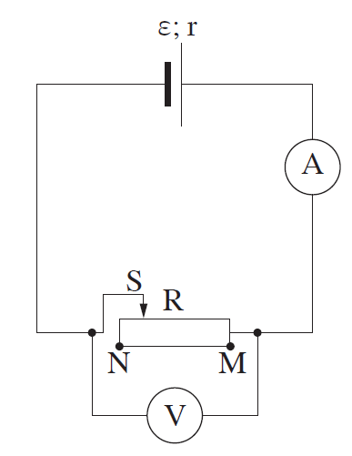
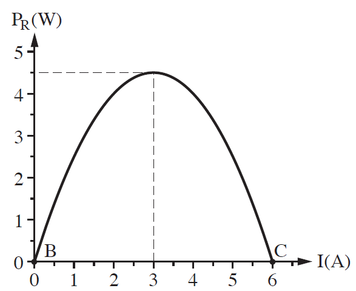

שאלה 3
לתלמיד יש סוללה שהכא"מ שלה ε וההתנגדות הפנימית שלה r. התלמיד חיבר את הסוללה לנגד משתנה R. אפשר לשנות את ההתנגדות של הנגד R מ-0 (בנקודה M) עד "אינסופי" (ערך גדול מאוד) בנקודה N. הניחו כי מכשירי המדידה אידיאליים.

הסבירו מדוע האנרגיה שהסוללה מספקת למעגל אינה עוברת במלואה לנגד המשתנה. (6 נקודות)
התלמיד מדד את הזרם, I, במעגל עבור התנגדויות שונות של הנגד המשתנה, וחישב את ההספק, P, המתפתח בנגד המשתנה לפי הנוסחה PR = (ε - I · r) · I. בתרשים ב מוצג ההספק המתפתח בנגד המשתנה כפונקציה של הזרם במעגל.

איזה גודל פיזיקלי מייצג הביטוי ε - I · r בנוסחה להספק? (5 נקודות)
באיזו נקודה (N או M) הוצב המגע הנייד S כאשר התקבלה הנקודה C בתרשים ב שלפניכם, ובאיזו נקודה הוצב המגע הנייד S כאשר התקבלה הנקודה B בתרשים ב? הסבירו את תשובתכם. (6 נקודות)
חשבו את הכא"מ ε של הסוללה, ואת ההתנגדות הפנימית שלה r. (10 נקודות)
מצאו את ההתנגדות החיצונית R כאשר ההספק הוא מרבי. (6.33 נקודות)